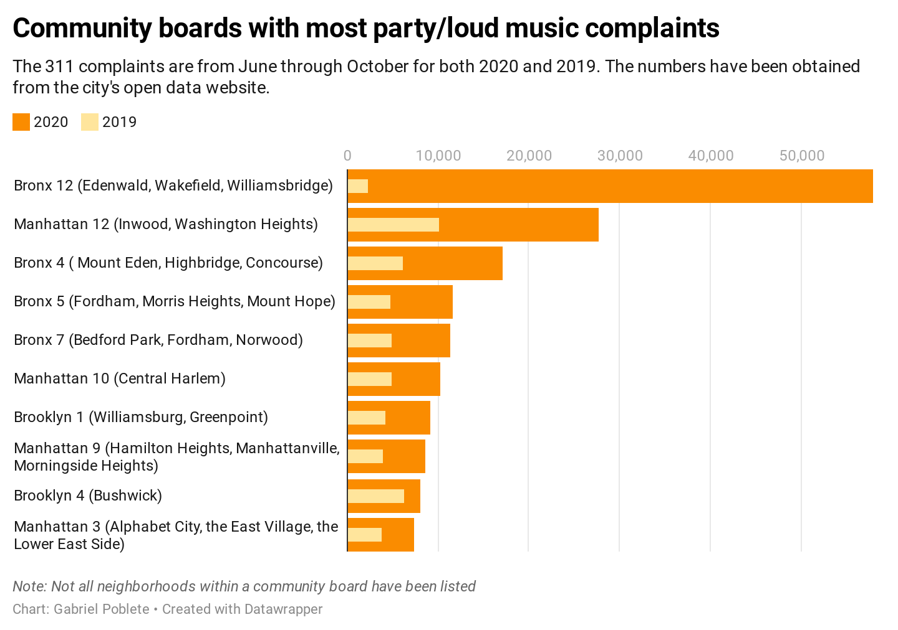

MIAMI – Party and loud music complaints have drastically increased this year, amid the pandemic. One area in the Bronx is topping the list.
Bronx Community Board 12 has seen nearly 58,000 311 party/loud music complaints from June through October, According to the city's open data website, more than any other community board. During that same time last year, it only 2,333 party/loud music complaints.
Bronx Community Board 12, which includes Williamsbridge, Wakefield and Edenwald, consists of more single-family homes than most other areas in the city. Police say that it makes it ripe for pop-up parties. Erik Hernandez, the executive officer of the Detective Borough Bronx, said the 47th Precinct has observed an increase in pop-up parties, with people charging for cover and alcohol.
“It is a legitimate, legitimate issue where many private homes, whether it’s the summer or the winter, are turned into unauthorized social clubs,” he said.
